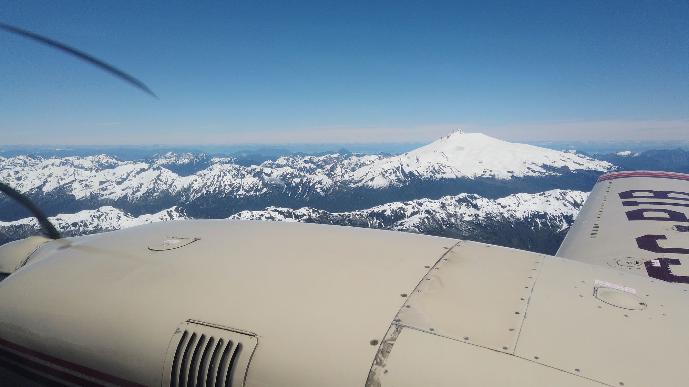

Desde Melinka, entre islas y cordillera.
Un archivo personal de viajes, vuelos y paisajes de la Patagonia insular. Fotografías y relatos construidos observando el territorio desde el aire, el mar y el camino.

El viaje comienza desde la ventana.
Islas, nubes y cordillera registradas durante distintos vuelos entre Aysén, Chiloé y el continente. Este primer adelanto abre una colección de rutas e historias de la Patagonia insular.
Ver en YouTubeArchivo de viajes
Aysén · Chiloé · Los LagosDesde el aire y a pie: paisajes y lugares que forman parte de cada recorrido. Cada fotografía conserva su fecha, lugar y referencia geográfica.
La orilla
Melinka · intermarealNo todo se ve desde arriba. Cuando el avión queda en tierra, el archipiélago se mira de rodillas: pozas de marea, conchas, algas y la luz baja de la tarde.
Notas y aprendizajes
Tecnología · IA · RutinaApuntes breves sobre las herramientas, decisiones y descubrimientos que acompañan este proyecto personal.